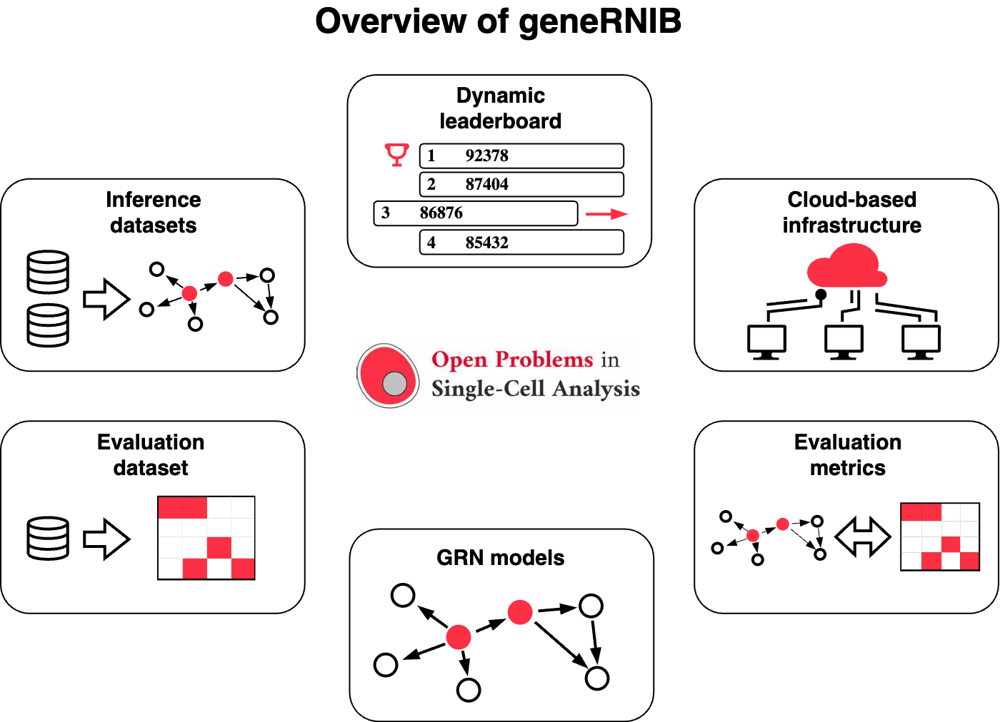
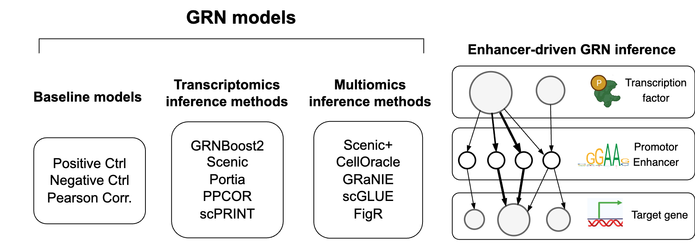

Documentation for Gene Regulatory Network Inference Benchmark (geneRNIB)
geneRNIB is a living benchmark platform for GRN inference. This platform provides curated datasets for GRN inference and evaluation, standardized evaluation protocols and metrics, computational infrastructure, and a dynamically updated leaderboard to track state-of-the-art methods. It runs novel GRNs in the cloud, offers competition scores, and stores them for future comparisons, reflecting new developments over time.
The platform supports the integration of new inference methods, datasets, and protocols. When a new feature is added, previously evaluated GRNs are re-assessed, and the leaderboard is updated accordingly. The aim is to evaluate both the accuracy and completeness of inferred GRNs. It is designed for both single-modality and multi-omics GRN inference.
{kind=link}
This documentation is supplementary to the paper geneRNIB: a living benchmark for gene regulatory network inference and the GitHub page on the OpenProblems platform.
To install geneRNIB, see the GitHub page.
For instructions on how to download and access datasets, refer to the Datasets section.
For information on evaluation metrics, refer to the GRN evaluation section.
To integrate your GRN inference method, metric, or dataset, follow the instructions in the Adding GRN inference methods, metrics, and datasets section.
Currently, 5 multi-omics GRN inference and 5 transcriptomics-based methods are integrated into geneRNIB. You can find the latest integrated GRN inference methods on that page.
{kind=link}
In addition, three baseline methods are integrated into geneRNIB. These methods are used to evaluate the performance of new methods. The baseline methods are:
Negative control: Randomly assigns weights to edges. GRN inference methods should outperform this method.
Pearson correlation: Assigns weights based on the Pearson correlation between genes.
Positive control: Similar to Pearson correlation with the exception that it uses both inference and evaluation dataset to infer the GRN. This method is expected to outperform most methods.
Note
This project is under active development and this documentation is still a draft.